UX & Usability Designing
- Abhay Rana (me@captnemo.in)
Types Of Designing
Informational Design
- Posters
- Notices
- Content Websites
Interactive Design
- User-oriented
- Interactive
Informational Design
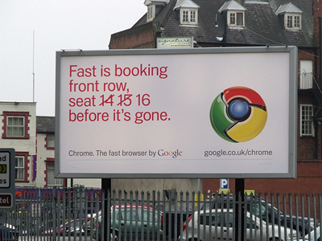http://www.flickr.com/photos/ell-r-brown/5308119110/sizes/m/
Interactive Design
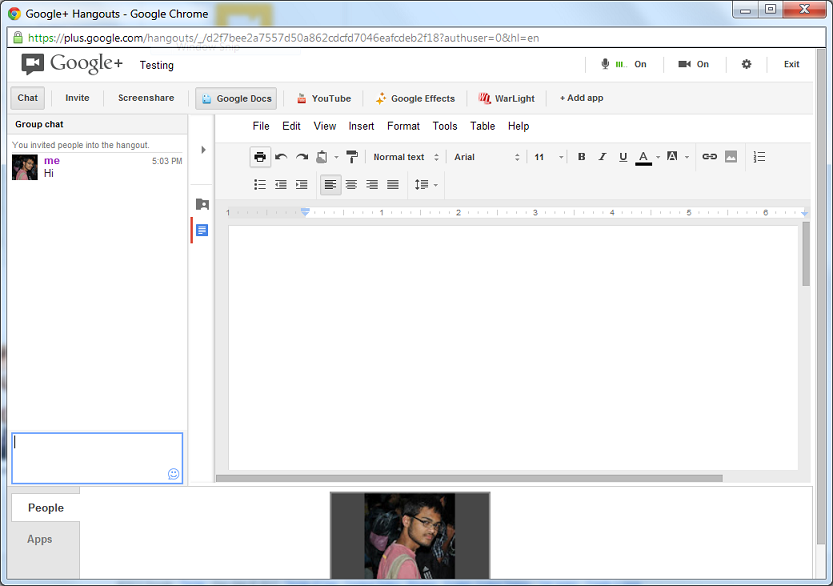https://plus.google.com/hangouts/
Youtube Leanback
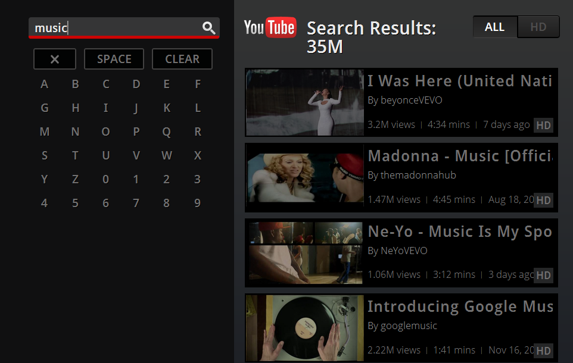http://www.youtube.com/leanback
Postbox App
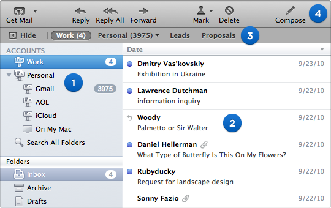http://www.postbox-inc.com/
Why do we need this?
Amazon circa 2001, 2003, 2005, 2007, 2011 via archive.org
Multi-Level Menus
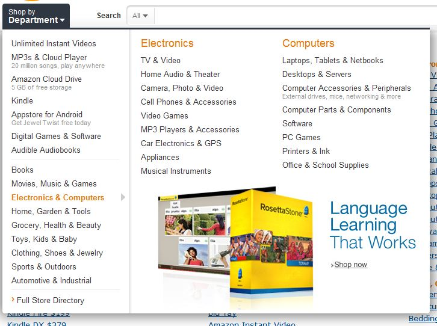Flipkart.com

Indiaplaza.in
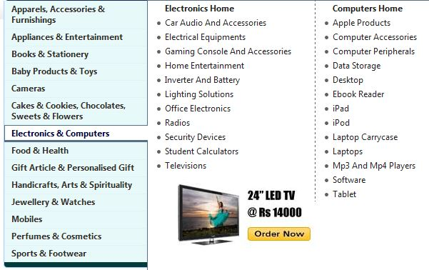Interface Oriented Designing
Some examples of interfaces ?
Touch Based Interfaces
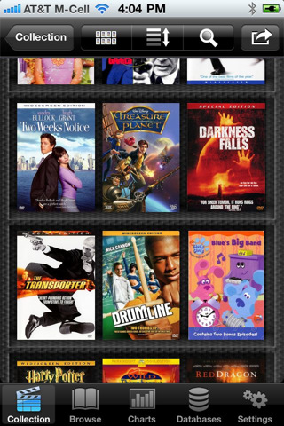http://itunes.apple.com/gb/app/dvd-profiler-for-ios/id408455612?mt=8
Touchable Websites 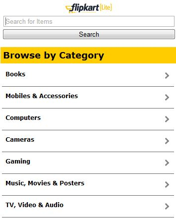
Command Line ?

Voice Activated

http://goo.gl/4vFql
Gesture Based
http://gamerant.com/microsoft-kinect-reviews-guide-benk-51320/
Dream worthy Interfaces
Avengers, 2012 - Warner Bros
Good Interfaces
What do they all have in common?
User-centered
Easily Learnable
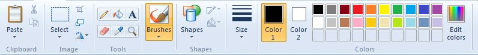Fits in the environment
- Angry Birds in Windows
- Dreamweaver in iPhones
- Windows on a DJ Set
- Temple Run using your Mouse
- Using Mouse to control a robot
And the gist is...
DON'T MAKE ME THINK
Design Paradigms
Don't make me learn
- Use existing design ideas
- Don't re-invent the wheel
- Design to learn quickly
- Minimum Effort
- Users are Lazy
Tabs
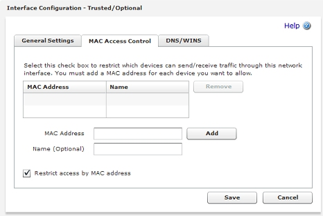Sensible Defaults
Examples:
- Choose default country
- Choose most-used price range
- Show popular content
- Reduce Design induced Frustration
Navigation Heirarchy
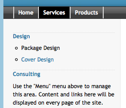Give your users an idea of what is important
Eye Tracking
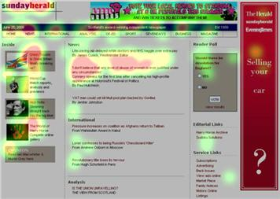Using Icons
- Bad Icons:
- Fine Icons/Buttons:
- More Bad Icons:
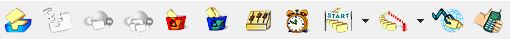 - Good:
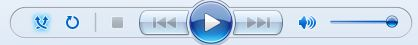
Call To Action
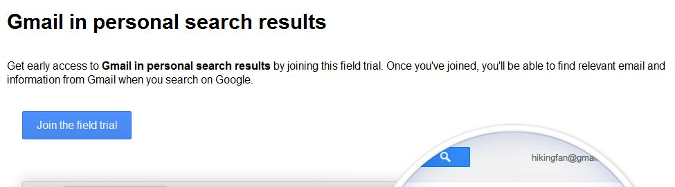More CTA
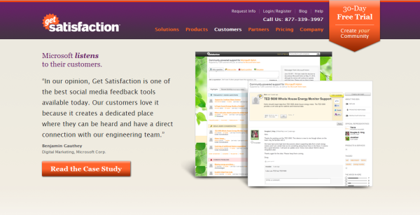Design Workflows
Produce at least 3 alternatives for every design decision - msuther
SketchFlow
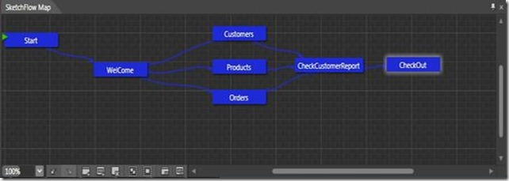Go through every screen & its relation with other screens
Mockups
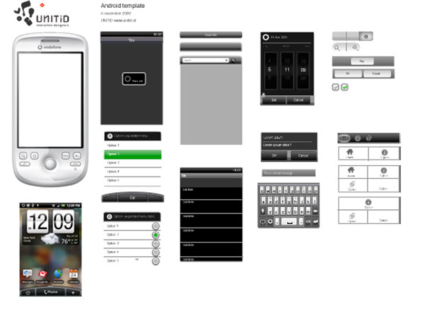Sketches, Wireframes, Mockups, Pixels, Shots
Think Over every interaction
Is this the easiest, most obvious interaction that the user would choose?
Can I offer an alternative to this interaction?
Don't miss out the power users
Don't try to do everything, do ONE THING WELL
References
This is just a small sample of what is out there in the web
Doing>
Learning>
Reading
Don't Make Me Think - Steve Krug
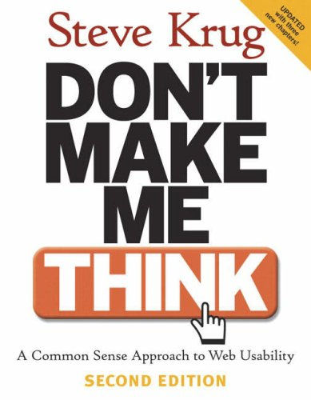GUI Bloopers
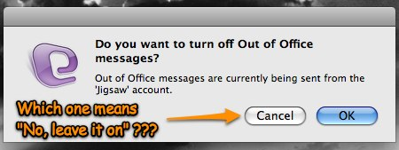 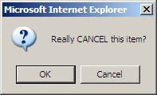Little Big Details
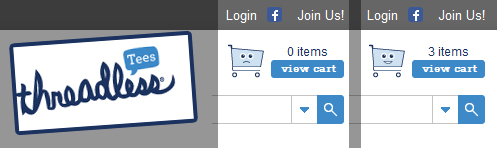 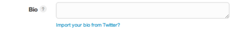Usability Hell
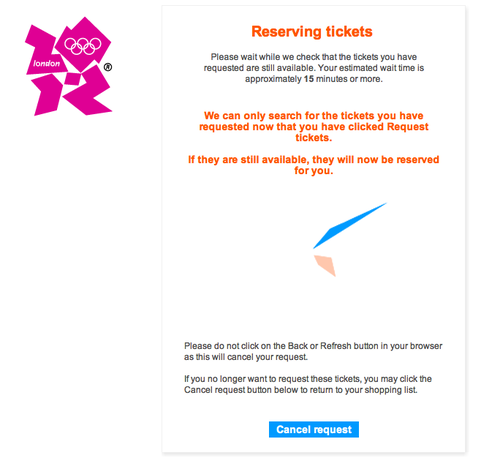ux.stackexchange
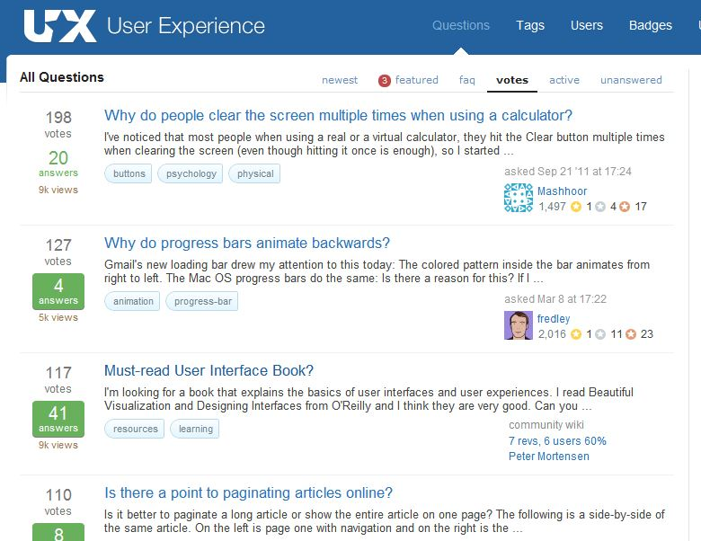Questions?
Think
about how would you improve
- A coffee machine
- A power socket
- google.com
- muzi
- anything really...